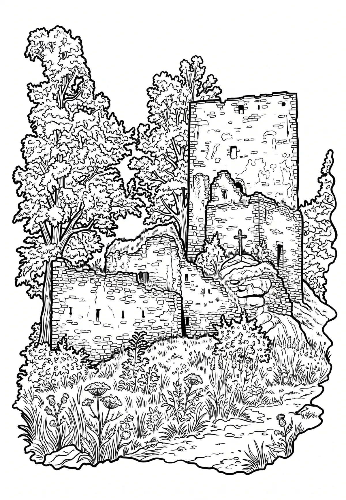

Vítkův kámen
Vítkův kámen (též Vítkův hrádek, německy Wittigstein či Wittinghausen) je zřícenina gotického hradu na vrcholu stejnojmenné hory na pravém břehu Lipenské přehrady v okrese Český Krumlov. Zřícenina stojí nad osadou Svatý Tomáš, asi pět kilometrů od Přední Výtoně. Od roku 1958 je chráněn jako kulturní památka. Od roku 1990 je majitelem nemovitosti obec Přední Výtoň.
Více na Wikipedii